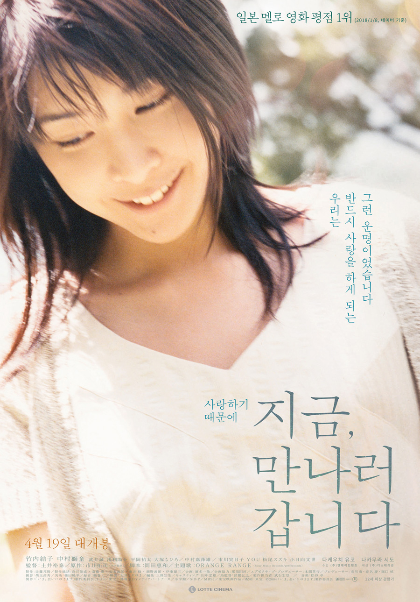
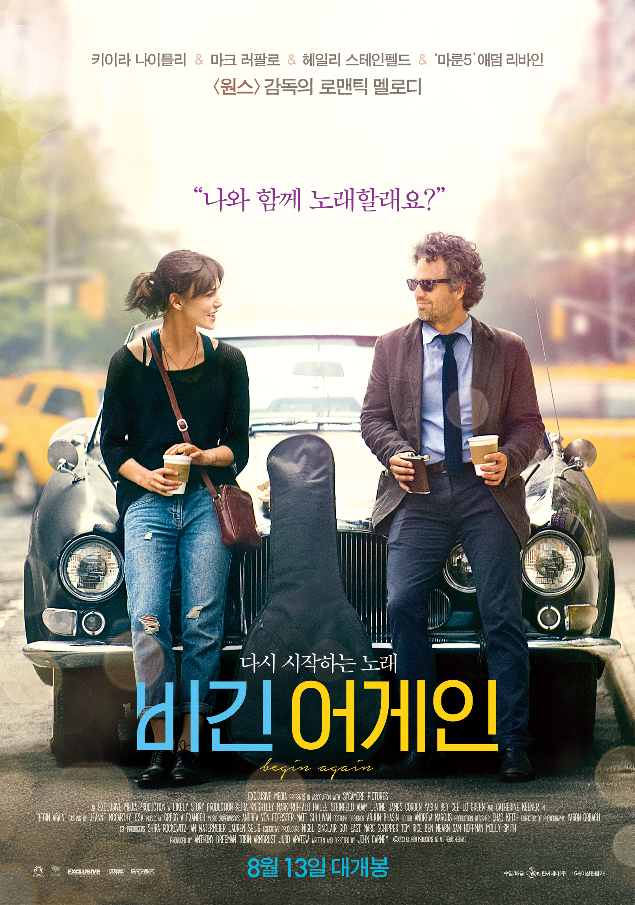
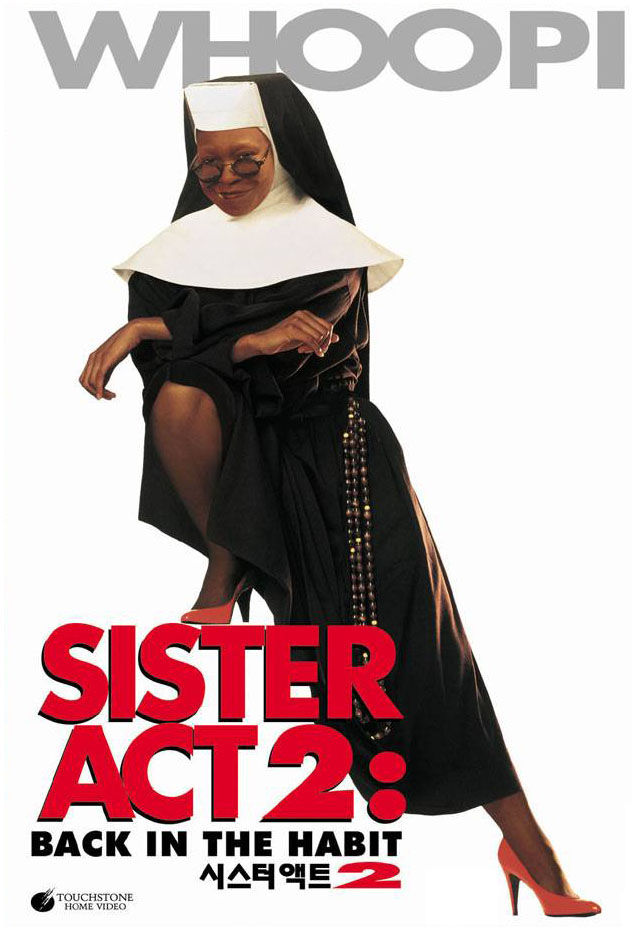

자기소개
- 이름 : Jason
- 사는 곳 : 관악구
- 보통 ‘초보자를 위한 프로그래밍 수업’이라고 하면 HTML과 CSS, JavaScript를 가르쳐 주는 Front-end 수업을 떠올리게 됩니다. 프로그래밍 유치원 캠프는 여타 프래그래밍 수업들과 달리 Front-end부터 Back-end까지 프로그래밍에 대한 전반적인 지식과 최근 핫한 IT 기술의 개념 그리고 그 쓰임새를 알려드려 여러분이 프로그래밍에 대한 흥미를 느끼고 더 나아가 원하는 것을 직접 개발할 수 있도록 도와드리고자 합니다.
인생 영화 BEST5
| 순위 | 제목 | 포스터 | 줄거리 | 바로가기 |
|---|---|---|---|---|
| 1 | 지금 만나러 갑니다 |  |
이 세상, 하나뿐인 내 사랑…
남편 ‘타쿠미’와 아들 ‘유우지’에게 어느 날, 두 사람 앞에 거짓말처럼 ‘미오’와 함께 새로운 사랑을 시작하는 ‘타쿠미’, 가족의 특별한 비밀, 그리고 사랑이 만든 기적 같은 순간…. “사랑하기 때문에… 지금, 만나러 갑니다” |
클릭 |
| 2 | 세 얼간이 |
‘알 이즈 웰’을 외치던 유쾌한 세 남자가 돌아왔다!
천재들만 간다는 일류 명문대 ICE, 성적과 취업만을 강요하는 학교를 발칵 뒤집어 놓은 대단한 녀석 란초! 친구의 이름으로 뭉친 `세 얼간이`! 삐딱한 천재들의 진정한 꿈을 찾기 위한 세상 뒤집기 한판이 시작된다! |
클릭 | |
| 3 | 비긴 어게인 |  |
“다시 시작해, 너를 빛나게 할 노래를!”
싱어송라이터인 ‘그레타’(키이라 나이틀리)는 남자친구 ‘데이브’(애덤 리바인)가 메이저 음반회사와 계약을 하게 되면서 뉴욕으로 오게 된다. 그러나 행복도 잠시, 오랜 연인이자 음악적 파트너로서 함께 노래를 만들고 부르는 것이 좋았던 그레타와 달리 스타가 된 데이브의 마음은 어느새 변해버린다. 스타 음반프로듀서였지만 이제는 해고된 ‘댄’(마크 러팔로)은 미치기 일보직전 들른 뮤직바에서 그레타의 자작곡을 듣게 되고 아직 녹슬지 않은 촉을 살려 음반제작을 제안한다. 거리 밴드를 결성한 그들은 뉴욕의 거리를 스튜디오 삼아 진짜로 부르고 싶었던 노래를 만들어가는데… |
클릭 |
| 4 | 어바웃 타임 |

|
모태솔로 팀(돔놀 글리슨)은 성인이 된 날, 아버지(빌 나이)로부터 놀랄만한 가문의 비밀을 듣게 된다. 꿈을 위해 런던으로 간 팀은 우연히 만난 사랑스러운 여인 메리에게 첫눈에 반하게 된다. 하지만 그와 그녀의 사랑이 완벽해질수록 팀을 둘러싼 주변 상황들은 미묘하게 엇갈리고, 어떠한 순간을 다시 살게 된다면, 과연 완벽한 사랑을 이룰 수 있을까? |
클릭 |
| 5 | 시스터 액트 2 |  |
라스베가스 최고의 인기 가수가 된 들로리스(Deloris: 우피 골드버그 분)에게 어느 날 수녀님들이 찾아와 도움을 청한다. 자신들이 선생으로 있는 학교의 아이들에게 음악을 가르쳐 달라는 것. 옛 정 때문에 할 수 없이 다시 수녀복을 입게 된 들로리스는 초반부터 못 말리는 문제아들에게 골탕을 먹고 두 손을 들고 만다. 그러나 우연히 학교의 이사가 학교를 폐쇄하려고 한다는 사실을 알게 된 들로리스는 다른 수녀님들과 힘을 합해 학교를 살리기로 마음먹고 특유의 끼를 발동한다. 아이들이 모두 음악에 소질이 있다는 걸 발견한 들로리스는 합창단을 만드는데, 처음에는 적대적이었던 학생들도 자신들의 숨은 재능을 발견해내고 희망을 갖게해 준 들로리스에게 마음을 열기 시작한다. 들로리스와 수녀님들은 합창대회에 참가해서 좋은 성적을 거두면 아이들에게도 자신감이 생기고 학교를 살리는데도 도움이 될 거라는 생각에 대회 참가를 추진하는데, 막상 대회가 열리는 날 들로리스가 클럽 가수라는 걸 알게 된 이사장과 교장은 합창단의 참가를 저지하러 출동한다. 한편 학생들은 다른 팀의 공연을 본 후 지레 겁을 먹고 포기하려하고, 들로리스는 아이들에게 용기를 불어넣어준다. 결국 아이들은 멋진 공연을 펼쳐 우승하고 학교의 폐교결정도 취소된다. 피날레를 장식하는 화려한 공연, "오 해피데이"와 찬송가 "기뻐하며 경배하세"를 비롯해 여러 귀에 익은 곡들이 어깨를 들썩이게 한다. |
클릭 |